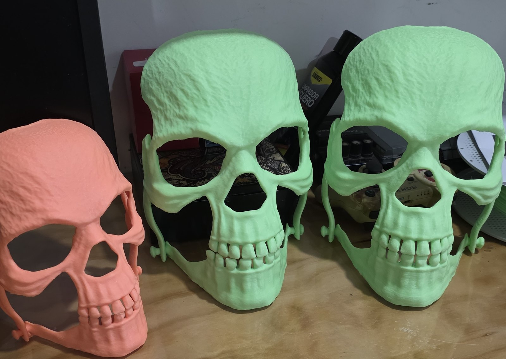

Máscaras con LED ultravioleta
Cada estudiante diseña una máscara de calavera a la escala de su propio rostro, con mandíbula articulada; se imprime en 3D en filamento fluorescente y se le integra un circuito de LED ultravioleta que la hace brillar. Es un proyecto que cruza tres módulos: diseño 3D, electrónica y proyecto integrador.